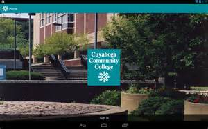

Welcome to Online Learning
Cuyahoga Community College uses BlackBoard to support your online learning. This site is a source for what you need to know for your online and hybrid courses.
Online courses allow student to take courses by computer at the hours that they choose within a framework of due dates determined by their instructor. This style will work of a student that has less time on thier hands.
Online credit courses are not self-paced. All fully-online and hybrid courses follow CCC’s academic calendar and begin the first day of the semester, unless otherwise noted in WebAdvisor. It is especially important to get off to a quick start in fully-online courses.
Cuyahoga Community College
2900 Community College Ave.
Cleveland, OH 44115
1-800-954-8742